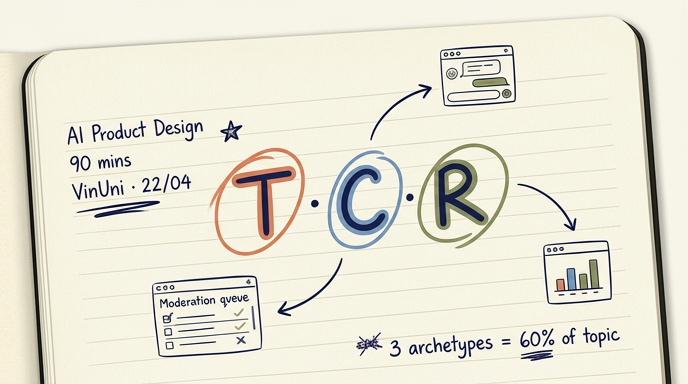
AI Product Design
UX Patterns & Prototyping
Ba chữ. T · C · R. App AI của bạn ship tuần này.
4 framework — collapse thành 3 chữ
People + AI Guidebook
6 chương, tập trung trust + mental models.
HAX Toolkit
18 guideline cho tương tác người–AI.
Usability Heuristics
10 nguyên tắc, vẫn chuẩn từ 1994.
Human-Centered AI
Tự động cao + người điều khiển cao, song hành.
Cho user thấy AI đang làm gì
Dừng, sửa, override
Khi AI sai, có đường về
Cách mình demo hôm nay
Claude Code trên Mac, share màn hình. Workshop dạy UX, không phải LLM quality.
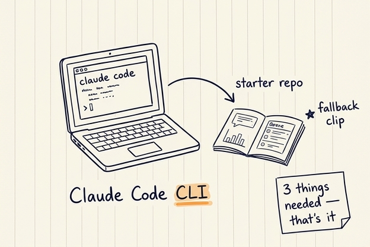
Claude Code CLI.
Ship kèm. Stack không quan trọng.
7 UI pattern — đi nhanh qua từng cái
Chat + context panel
Hỏi–đáp kèm nguồn, lý do, trạng thái bên cạnh.
Upload → dashboard
Nộp file, AI trả về biểu đồ và KPI.
Query → structured result
Gõ câu hỏi, nhận bảng hoặc chart.
Wizard + inline audit
Form nhiều bước, AI audit ngay trong lúc điền.
Draft → approve → send
AI soạn, người duyệt, rồi mới gửi đi.
Queue + approval
Agent chạy trước, người review sau theo hàng đợi.
Real-time streaming
Voice hoặc chat trực tiếp, độ trễ thấp.
Chat + context panel
User hỏi chat, agent trả lời. Panel bên cạnh show context — source docs, progress, reasoning.
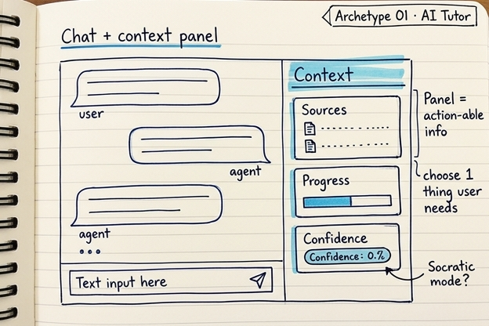
Upload → dashboard
User upload file (CSV, audio, PDF), agent xử lý batch, trả về dashboard — aggregate stats + top quotes + trend chart.
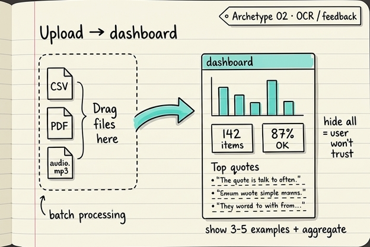
Query → structured result
Text in, structured data out. Không build live hôm nay — có interactive ref link dưới đây.
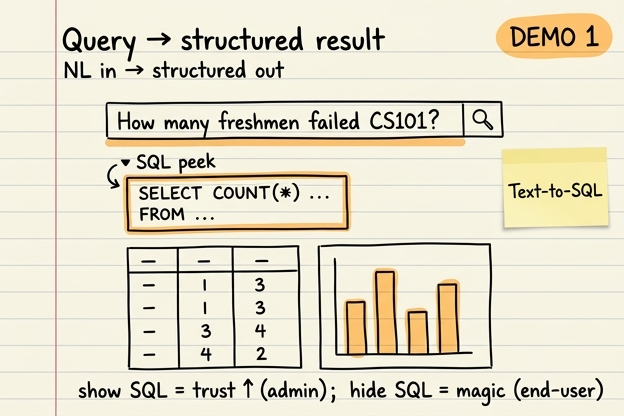
Wizard + inline audit
Guided multi-step creation với compliance check. User điền từng bước, agent audit inline — không chờ submit.
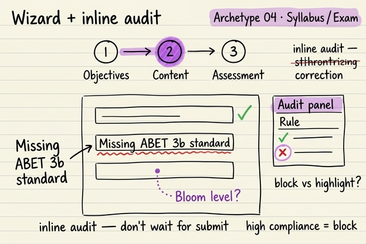
Draft → approve → send
Irreversible action (send tin qua Zalo / SMS / Email, push notification). Cần double-confirmation UI — không có "Ctrl-Z" trong đời thật.
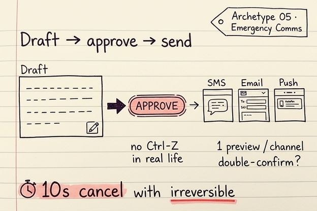
Queue + approval dashboard
Agent classify hàng loạt, human review sau. Design cho throughput. Không build live — có interactive ref link dưới đây.
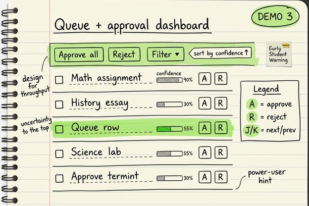
Real-time streaming
Voice, live audio, token-by-token LLM output. Low-latency pipeline.
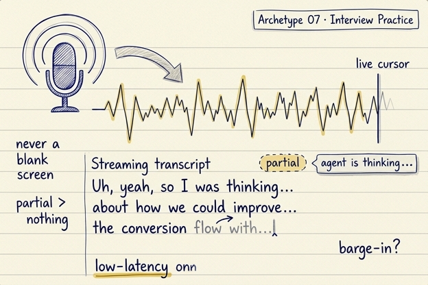
4 pattern còn lại — ngoài scope hôm nay
Upload → dashboard
Wizard + inline audit
Draft → approve → send
Real-time streaming
Cùng T·C·R — khác payload. Refs cuối slide.
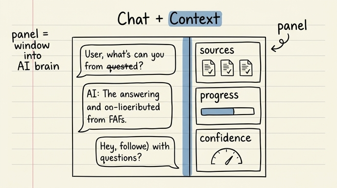
Chat + Context — pattern spotlight
1 deep demo, transfer rộng hơn tưởng. Cover: trợ giảng AI, LMS chatbot, gia sư Socratic, admissions, customer support, RAG. Panel đổi payload → map được 5+ UI pattern.
Bạn thấy — không đọc slide.
Baseline → T → C → R. Nếu bạn zoom app của mình sau đó cũng y vậy.
Chat cơ bản — user không biết nguồn nào, độ tin cậy bao nhiêu
Đây là điểm xuất phát, giống 20 app khác. Input → output, không gì ở giữa.
Chạy xong: hỏi — trả lời. User không biết AI dùng doc nào, confidence ra sao, có hallucinate không. Pain = trust gap.
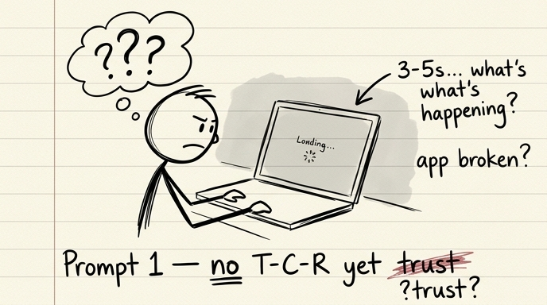
Panel = cửa sổ vào AI brain
Thêm Sources panel (3 refs) + Confidence bar. User nhìn 1 phát là biết AI dựa vào đâu.
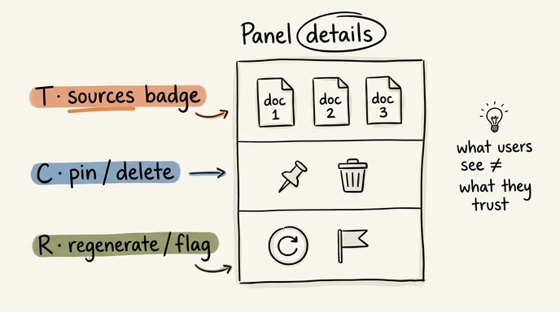
Câu trả lời chưa chính xác? User có đường sửa
"Flag" link dưới mỗi câu + correction flow + Stop button giữa khi AI đang stream.
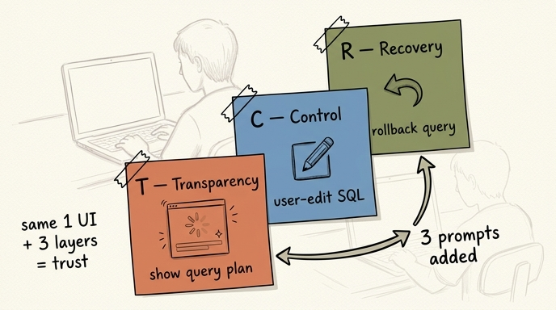
Recovery = pre-flight, không chỉ post-hoc catch
Retry button per message + pre-flight validation (input <5 chars warning, vague question → suggest rephrase).
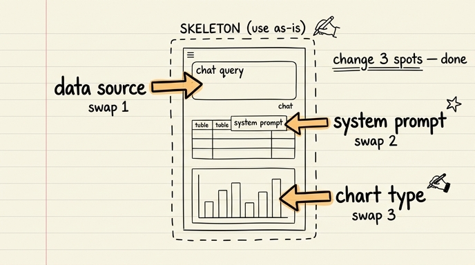
Chat + source → Chat + chart
Same shell. Same 3 prompts (T·C·R). Khác payload.
Chat + source panel
Chat + chart panel
/prd-to-screens
PRD vào — 4 prompt build ra. Copy, paste, review.
Install + cách chạy → refs cuối slide.
Đến lượt bạn — mở PRD của mình ra.
Chạy /prd-to-screens. Nhận 4 prompt. Ship 1 pattern tuần này.